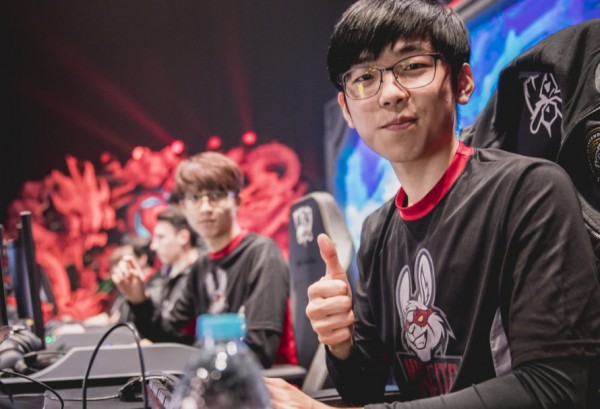

LEAGUE OF LEGENDS
- HOME
- CHAMPIONS
- NEWS
- SIGN UP
- LOG IN
LEAGUE OF LEGENDS
Sau màn ra mắt ấn tượng tại lần đầu tiên tham dự Chung Kết Thế Giới, hỗ trợ IgNar của Misfits đã chia sẻ nhưng quan điểm của anh về màn trình diễn của đội mình trong giải đấu này. Từ sau chiến thắng trước TSM, Misfits đã được coi là một trong những đội tuyển xuất sắc nhất Châu Âu ở thời điểm hiện tại. Nhưng cuối cùng họ vẫn phải dừng bước trước những người Hàn Quốc, và những người đó không ai khác chính là SKT, đội tuyển đã giành một chiến thắng “đã được dự đoán từ trước“.
Bạn dự đoán đội tuyển nào là đội tuyển mạnh nhất tại giải đấu lần này? Và tại sao lại như vậy?
- Faker là đối thủ khó nhằn nhất mà tôi từng phải đối mặt, thật khó khi phải đụng độ với một người rất hiếm khi mắc sai lầm. RNG cũng là một đội tuyển mạnh bởi họ sở hữu một lối chơi rất chủ động và hiệu quả.
Theo bạn thì đội tuyển nào sẽ lên ngôi vô địch?
- Tôi đã từng nghĩ rằng RNG có nhiều khả năng lên ngôi vương sau khi trận đấu giữa chúng tôi với SKT kết thúc, nhưng giờ thì mọi thứ vẫn đang chờ đợi chúng ta ở phía trước. Cũng không thể nói rằng SKT sẽ không thể giành được chức vô địch một lần nữa.
Bạn đã được bầu chọn làm MVP trong trận đấu với SKT, vậy bạn có nghĩ rằng bạn đã thi đấu tốt trong trận đấu đó không?
- Thật tuyệt khi mọi người cho rằng chúng tôi đã thi đấu tốt, dù cho chúng tôi đã phải nhận thất bại.

Bạn có hài lòng với kết quả của đội tuyển mình tại CKTG năm nay không?
- Một nửa có và một nửa không. Chúng tôi đã đạt được mục tiêu trong năm nay và cũng đã thể hiện khá tốt tại CKTG. Tuy nhiên dựa vào màn trình diễn của chúng tôi trong giải đấu này thì tôi tin rằng chúng tôi còn có thể làm tốt hơn trước SKT.
Trận đấu giữa Misfits và SKT đã có một kết quả rất sát sao, vậy theo bạn thì tại sao các bạn lại thất bại trước SKT?
- Chúng tôi đã mắc phải khá nhiều sai lầm vì chúng tôi vẫn còn thiếu kinh nghiệm. Theo ý kiến cá nhân tôi thì nếu như chúng tôi có nhiều kinh nghiệm thi đấu hơn thì có lẽ kết quả đã khác.
Nếu như bạn có thể thay đổi một khoảnh khắc trong trận đấu với SKT thì đó là khoảnh khắc nào vậy? Và tại sao lại là khoảnh khắc đó?
- Đó là khi tôi băng trụ đường giữa với vị tướng Alistar. Lẽ ra tôi đã có thể làm tốt hơn trong tình huống đó.